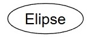

GTI - Banco de dados - 2025 - Anotações de aula
Professor Miguél Suares
2025-08-25
Leitores de formato de arquivo EPUB para SmartPhone
—————————————————————————————————————————————
ANDROID
Moon+ Reader

Livros Texto da Disciplina
—————————————————————————————————————————————
“Introdução a sistemas de bancos de dados†do autor “Christopher John Date”
| Autor(es) | Christopher John Date |
| Editora | LTC |
| Idioma | Português |
| ISBN | 978-85-352-8445-4 |
| Formato | Capa dura |
| Páginas | 1623 |
| Código Biblioteca |
“Projeto de bancos de dados†do autor “Carlos Alberto HEUSER”

| Autor(es) | Carlos Alberto HEUSER |
| Editora | Bookman |
| Idioma | Português |
| ISBN-10 | 8577803821 |
| Formato | Impresso |
| Páginas | 282 |
| Código Biblioteca |
04/08/2025
Professor Miguél Suares
Disciplina: Banco de Dados
- Curso: Gestão em Tecnologia da Informação (GTI)
- PerÍodo: Noturno
- Turma: 2º semestre de 2025
- Campus: Chácara Santo Antônio
“Dados são o novo petróleo.†– Clive Humby!

11/08/2025
Professor Miguél Suares
O inÍcio : Edgar Frank “Ted†Codd (19/08/1923 – 18/04/2003)
Nome: Professor Codd - Matemático da IBM
1965: Cria modelo relacional nos tempos da IBM/NASA/Projeto Apolo

1969: Codd não é levado a sério
1970: Publica a teoria relacional nas universidades (Berkley, Califórnia)
Anos 1970: IBM entra no Modelo relacional: SystemR e SEQUEL/SQL
1970: IBM entende a importância do modelo de Codd
1971: Como Codd publica o conhecimento, o projeto vai para Raymond Francis Boyce
1974: Donald D. Chamberlin e Raymond Francis Boyce criam a SQL na IBM
1973: Raymond Francis Boyce criam o SystemR (Banco Relacional da IBM)
Codd continua publicando artigos sobre modelo relacional
1977: Ex-alunos prof Michael StoneBraker fundam a (Relational Inc) ORACLE “copiando†o SystemR da IBM.


Anos 1990: MySQL e POSTGRES que vira POSTGRESQL
1993: O SYBASE SQL Server é portado para o Windows NT 4.0
1994: Fim do relacionamento entre Microsoft e SYBASE: nasce o MS-SQL Server
1994: Andrew Yu e Jolly Chen Adicionam SQL ao POSTGRES: nasce o PostgreSQL

1994: David Axmark, Allan Larsson e Michael “Monty†Widenius criam o MySQL.
1997: Nasce o postgreSQL 6.0
1998: Carlo Strozzi - Modelo Não-SQL (conceito de SGBDs que não usam interface SQL)

Anos 2000: Sybase eo No-SQL
2003 - Doug Cutting e Mike Cafarella, projeto Hadoop baeado no documento Google File System
2007 - 10gen (MongoDB Inc) inicia o projeto MongoDB (Não SQL)

2007 - Avinash Lakshman do facebook disponibiliza o Apache Cassandra (Não SQL)
2008 - BIG DATA Lançado o Apache HADOOP e o Apache Hive (emulador SQL)
BIG

18/08/2025
Professor Miguél Suares
Introdução: Visitando a teoria de Bancos de Dados

Banco de Dados Um banco de dados é uma coleção compartilhada de dados logicamente relacionados, projetada para atender às necessidades informacionais de uma organização. - DATE, C. J. An Introduction to Database Systems. 8. ed. Boston: Addison-Wesley, 2003.
Ou seja, alguns pontos-chave da definição de Date:
“Coleção de dados …†→ não é um conjunto de arquivos soltos, mas dados organizados.
“Compartilhada …†→ não pertence a apenas um usuário ou aplicação; é usada por vários.
“Dados logicamente relacionados …†→ os dados têm um relacionamento semântico, não são apenas agrupamentos arbitrários.
“Projetada para atender necessidades …†→ o banco existe para suportar os processos de uma organização (consultas, relatórios, controle, tomada de decisão).

Banco de Dados Relacional Um banco de dados relacional é um banco de dados baseado em um modelo de dados relacional, no qual os dados são representados como um conjunto de relações (tabelas), e cada relação consiste em tuplas (linhas) e atributos (colunas). - SILBERSCHATZ, Abraham; KORTH, Henry F.; SUDARSHAN, S. Database System Concepts. 6. ed. New York: McGraw-Hill, 2010.
Agora, alguns pontos-chave da definição de Abraham Silberschatz :
Base no modelo relacional de Codd (1970).
Dados representados em tabelas (relações).
Cada tabela é composta de tuplas (linhas) e atributos (colunas).
Integridade garantida por restrições (chaves, integridade referencial, domÍnio de atributos).
Manipulação feita por linguagens relacionais (álgebra relacional, cálculo relacional, SQL).
O Banco de Dados Relacional organiza as informações em tabelas bidiomensionais constituÍdas de linhas e colunas chamadas e essas tabelas recebem o nome de relações. Cada relação possui um campo-chave que confere identificação exclusiva a cada registro da tabela.
Modelo Matemático de um Banco de Dados
Considere um Banco de Dados para representar, com consistência Matemática os funcionários e Departamentos de uma Empresa.
Podemos representa-lo matemáticamente utilizando a teoria dos conjuntos

Diagrama de Montadoras, VeÍculos e Proprietários
Edgard F Cood explica em sua obra “A Relational Model of Data for Large Shared Data Banks†como definir uma Banco de Dados compartilhado matemáticamente
Um banco de dados relacional é um banco de dados no qual todos os dados são representados por meio de relações (matematicamente, conjuntos de tuplas), e todas as operações sobre os dados são baseadas em operadores formais do cálculo relacional e da álgebra relacional. - A Relational Model of Data for Large Shared Data Banks†(Communications of the ACM, vol. 13, n. 6, pp. 377–387, 1970).
Então para podemos relacionar estes dois conjuntos (Funcionários e Departamentos) utilizando a Teoria das Funções
$$
f(x) = Y
$$
$$
F(Funcionário) = Departamento
$$
Diagrama de Montadoras, VeÍculos e Proprietários
Mas vai ficar faltando como representar os atributos nesse modelo (colunas das tabelas):
Ainda, é necessário acrescentar algumas regras de integridade a representação;
Modelo Lógico de Banco de Dados
Modelo Conceitual “Entidade Relacionamento†de Banco de Dados
O Modelo Entidade-Relacionamento (MER), proposto por Peter Chen em 1976, é uma ferramenta fundamental na modelagem de dados. É um modelo de dados de alto nÍvel que descreve a estrutura conceitual de um banco de dados. O Modelo Entidade-Relacionamento (MER) é representado graficamente através de um DER (Diagrama Entidade-Relacionamento).
É utilizado para projetar Bancos de Dados Relacionais a partir de entrevistas onde se descreve as informações que se deseja armazenar de forma consistente. Exemplo:
“Desenhe um diagrama entidade-relacionamento DER contendo as entidades funcionarios e departamentos. A entidade ”funcionários†possui os atributos ”nome†e ”CPF”. A entidade ”Departamentos†possui os atributos ”Nome†e ”sigla”. O atributo ”CPF†é chave primária da entidade ”Funcionários”. O atributo ”sigla†é chave primária da entidade ”Departamentos”. As entidades ”Funcionários†e ”Departamentos†se relacionam através de um relacionamento chamado ”Pertence”.”

Segundo Laudon
Diagrama Entidade/Relacionamento (DER) é uma representação esquemática utilizada para entender as relações entre as tabelas de um banco de dados relacional. [[1] - LAUDON, Kenneth C.; LAUDON, Jane P. *Sistemas de informação gerenciais*. 11. ed. São Paulo: Pearson Education do Brasil, 2010. p. 180.]
Composição e Significado do Diagrama Entidade Relacionamento (DER)
| Nome | Desenho | Significado |
| Entidade |  |
Representa uma tabela e é identificada no texto por um substantivo. |
| Nome | Desenho | Significado |
| Atributo |  | Representa uma coluna e é identificada no texto por um adjetivo. |
| Nome | Desenho | Significado |
| Relacionamento |  |
Representa uma Referência e é identificada no texto por um Verbo. |
Modelo FÍsico de Banco de Dados
Geração do modelo FÍsico para aplica-lo ao SGBD (Sistema de Gerenciamento de Banco de Dados):
Uma vez que o modelo conceitual seja gerado, o analista pode mapea-lo para um “modelo fÍsico†onde se mapeiam chaves primárias e chaves forasteiras nas tabelas.
Após a geração do modelo fÍsico pode-se gerar o SQL que monta a estrutura do Banco de Dados.

Código SQL - Implementação do Modelo FÍsico
-- Exemplo testado e gerado no SGBD Postgres versão 15
-- Tabela Funcionários
CREATE TABLE IF NOT EXISTS "public".funcionarios
(
cpf bigint NOT NULL,
nome varchar(200)
);
-- Tabela Departamentos
CREATE TABLE IF NOT EXISTS "public".departamentos
(
sigla integer NOT NULL,
nome varchar(200)
);
-- Definindo a coluna "cpf" da tabela "funcionários" como chave primária
alter table "public".funcionarios add constraint "chave_primaria_funcionarios" primary key (cpf);
-- Definindo a coluna "sigla"" da tabela "departamentos" como chave primária
alter table "public".departamentos add constraint "chave_primaria_departamentos" primary key (sigla);
-- Gerando a integridade referêncial
-- Importando a chave primária da tabela "departamentos" como "chave estrangeira"
-- na tabela "funcionários"
-- primeiro adiciona-se a coluna estrageira "sigla" que é coluna originalmente
-- pertencente a tabela departamentos
alter table "public".funcionarios add column sigla integer;
-- finalmente conecte a coluna sigla a chave primária da tabela "departamento"
-- criando então uma chave estrageira na tabela "funcionários".
alter table "public".funcionarios add constraint "Chave_estrangeira_Departamento_funcionarios" foreign key (sigla) references "public".departamentos(sigla);EXEMPLO: MONTADORA
Modelo Matemático
Construa um Banco de Dados com suporte a consistência das informações. Utilize para isso o modelo Relacional. Precisamos armazenar as informações dos VeÍculos, Montadoras e Proprietários;
Representação Matemática em Conjuntos e seus Elementos :

Diagrama de Montadoras, VeÍculos e Proprietários
Gerando os Relacionamentos “Matemáticamente†- (Teoria das Funções, DomÍnios e Imagens):

Diagrama de Montadoras, VeÍculos e Proprietários